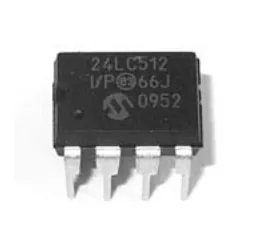
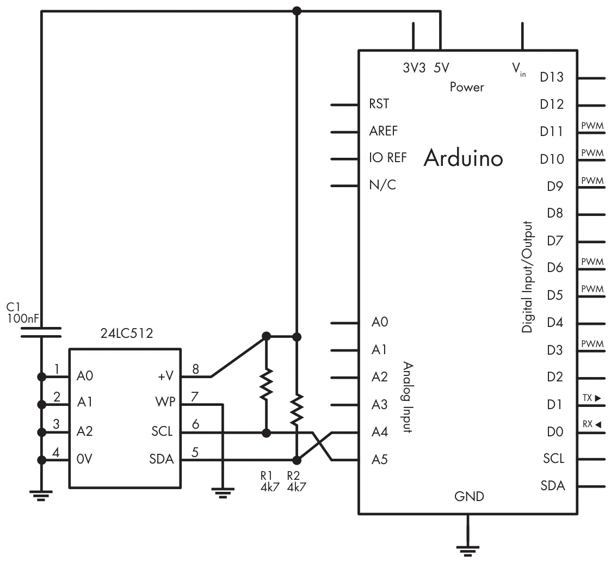
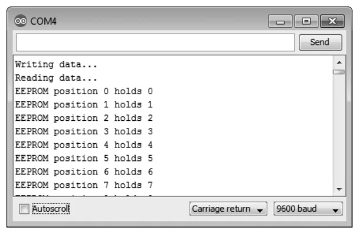

In Chapter 16 we used the Arduino’s internal EEPROM to prevent the erasure of variable data caused by a board reset or power failure. The Arduino’s internal EEPROM stores only 1,024 bytes of data. To store more data, you can use external EEPROMs, as you’ll see in this project.

For our external EEPROM, we’ll use the Microchip Technology 24LC512 EEPROM, which can store 64KB (65,536 bytes) of data (Figure 17-2). It’s available from retailers such as Digi-Key (part number 24LC512-I/P-ND) and element14 (part number 1660008).
The Hardware
Here’s what you’ll need to create this project:
- One Microchip Technology 24LC512 EEPROM
- One breadboard
- Two 4.7 kΩ resistors
- One 100 nF ceramic capacitor
- Various connecting wires
- Arduino and USB cable
The Schematic
For the circuit, connect each 4.7 kΩ resistor between 5V and SCL and between 5V and SDA, as shown in Figure 17-3.

The bus address for the 24LC512 EEPROM IC is partially determined by the way it is wired into the circuit. The last 3 bits of the bus address are determined by the status of pins A2, A1, and A0. When these pins are connected to GND, their values are 0; when they are connected to 5V, their values are 1.
The first 4 bits are preset as 1010. Therefore, in our circuit, the bus address is represented as 1010000 in binary, which is 0x50 in hexadecimal. This means that we can use 0x50 as the bus address in the sketch.
The Sketch
Although our external EEPROM can store up to 64KB of data, our sketch is intended to demonstrate just a bit of its use, so we’ll store and retrieve bytes only in the EEPROM’s first 20 memory positions.
Enter and upload the following sketch:
// Project 54 - Using an External EEPROM
❶ #include <Wire.h>
#define chip1 0x50
unsigned int pointer;
byte d=0;
void setup()
{
❷ Serial.begin(9600);
Wire.begin();
}
void writeData(int device, unsigned int address, byte data)
// writes a byte of data 'data' to the EEPROM at I2C address 'device'
// in memory location 'address'
{
❸ Wire.beginTransmission(device);
Wire.write((byte)(address >> 8)); // left part of pointer address
Wire.write((byte)(address & 0xFF)); // and the right
Wire.write(data);
Wire.endTransmission();
delay(10);
}
❹ byte readData(int device, unsigned int address)
// reads a byte of data from memory location 'address'
// in chip at I2C address 'device'
{
byte result; // returned value
Wire.beginTransmission(device);
Wire.write((byte)(address >> 8)); // left part of pointer address
Wire.write((byte)(address & 0xFF)); // and the right
Wire.endTransmission();
❺ Wire.requestFrom(device,1);
result = Wire.read();
return result; // and return it as a result of the function readData
}
void loop()
{
Serial.println("Writing data...");
for (int a=0; a<20; a++)
{
writeData(chip1,a,a);
}
Serial.println("Reading data...");
for (int a=0; a<20; a++)
{
Serial.print("EEPROM position ");
Serial.print(a);
Serial.print(" holds ");
d=readData(chip1,a);
Serial.println(d, DEC);
}
}Let’s walk through the sketch. At ❶, we activate the library and define the I2C bus address for the EEPROM as chip1. At ❷, we start the Serial Monitor and then the I2C bus. The two custom functions writeData() and readData() are included to save you time and give you some reusable code for future work with this EEPROM IC. We’ll use them to write and read data, respectively, from the EEPROM.
The function writeData() at ❸ initiates transmission with the EEPROM, sends the address of where to store the byte of data in the EEPROM using the next two Wire.write() functions, sends a byte of data to be written, and then ends transmission.
The function readData() at ❹ operates the I2C bus in the same manner as writeData(), but instead of sending a byte of data to the EEPROM, it uses Wire.requestFrom() to read the data at ❺. Finally, the byte of data sent from the EEPROM is received into the variable result and becomes the return value for the function.
The Result
In void loop() the sketch loops 20 times and writes a value to the EEPROM. Then it loops again, retrieving the values and displaying them in the Serial Monitor, as shown in Figure 17-4.
